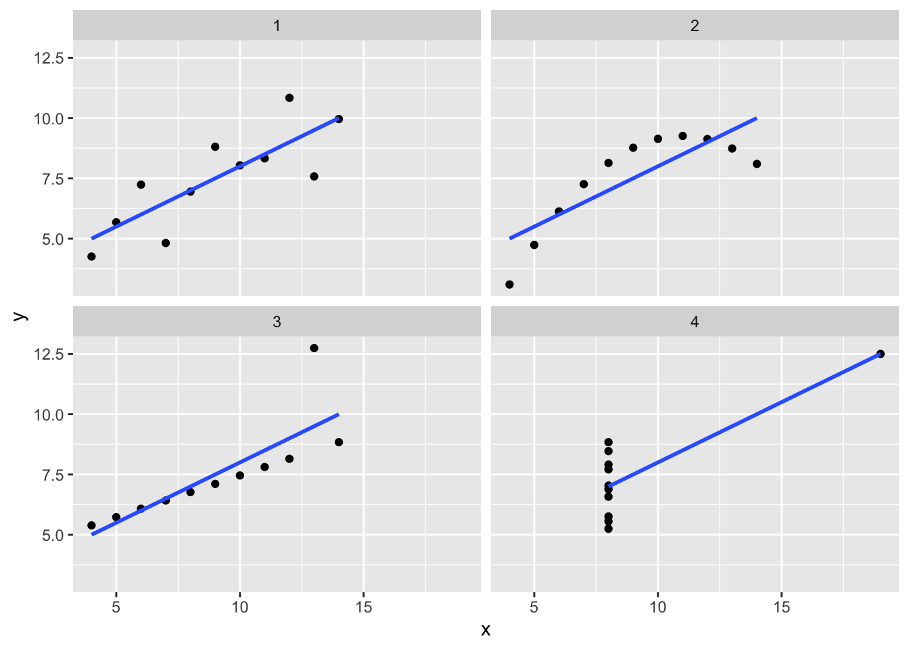
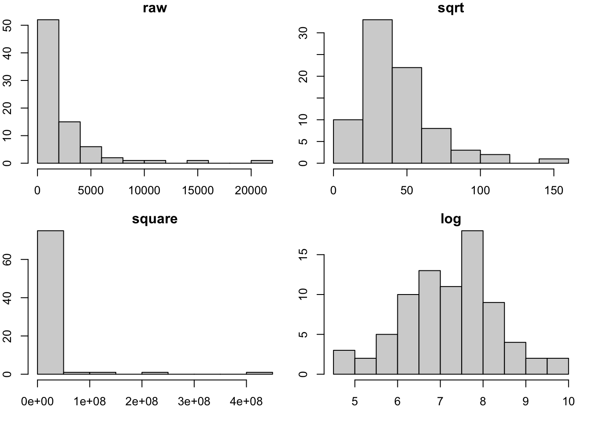
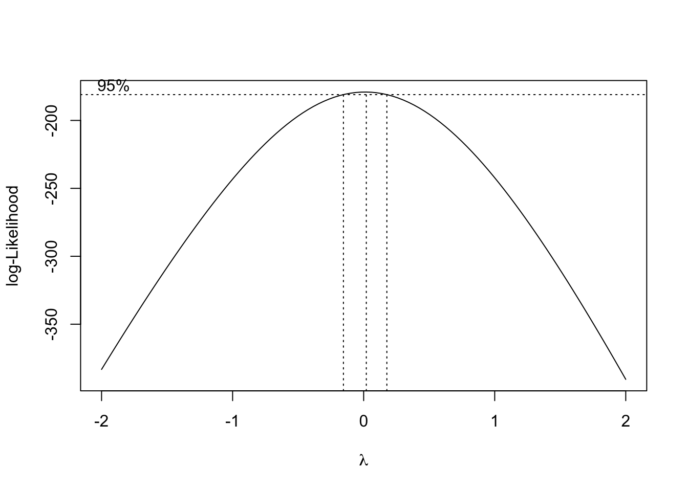
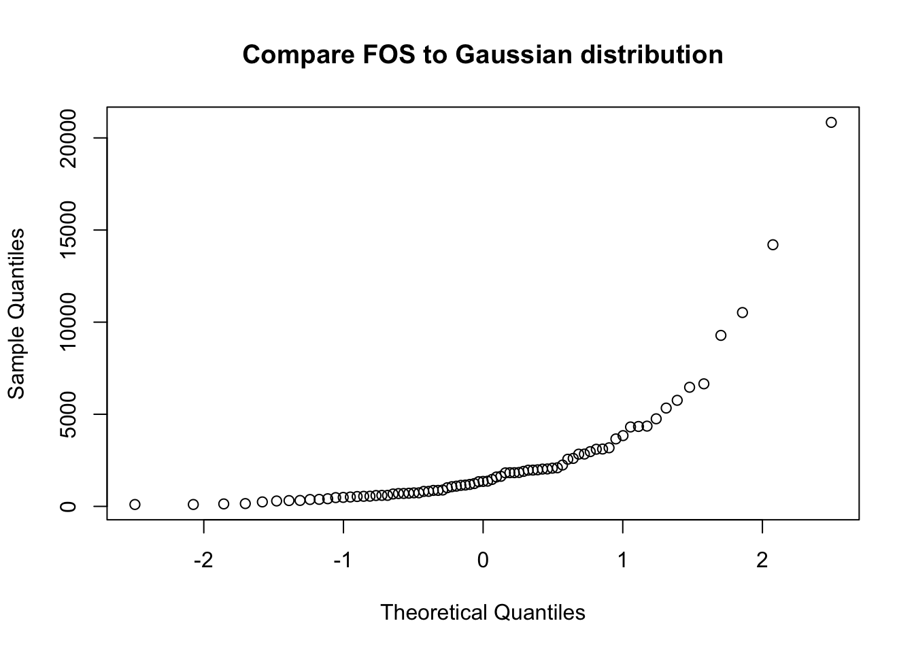

S2_EDA: Exploratory data analysis and visualization
Vincent J. Carey, stvjc at channing.harvard.edu
July 07, 2022
Source:vignettes/S2_EDA.Rmd
S2_EDA.RmdEDA: Exploratory data analysis
The field of EDA has changed, thanks to advances in computational and visualization technology. Classical EDA addressed
Assessing distributional shape
Comparing batches of numbers: Boxplots and beyond
Transformations; handling “outliers”
More recently, we can consider exploratory data activities that use
interactive tables
interactive graphics
purpose-built graphical user interfaces
We will explore all of these concerns. Our principles include
- always be prepared to “look at the data”
- when very high volumes are involved, sampling and dimension reduction are relevant
- every facet of your data should be accessible to exploration and summarization
Learning objectives
- Know and propagate knowledge of Anscombe’s quartet
- simple statistics may fail to disclose structure
- visualization should always be conducted
- Many exploratory tools are tunable and the tuning affects interpretation
- understand how you might use shiny to explore tunable data visualization
- Data transformations can be useful for allowing the use of classical methods
- The Box-Cox transformation family provides clues for choosing a transformation
- QQplots help us reason about the suitability of reference distributions
- We only look at qqnorm, but qqplot allows more general comparisons
- Shiny + TnT allow exploration of data in the context of linear genome annotation
Anscombe’s quartet: statistics that miss the point
In 1973 Francis Anscombe constructed four bivariate datasets. The four datasets of interest are the pairs of columns (x1, y1), (x2, y2), ….
In our discussion of probability we provided definitions of mean, variance, covariance, correlation. Here is a quick check on the means of the variables in the quartet.
- We use the
applyfunction which has general arguments
apply(X, MARGIN, FUN, ..., simplify=TRUE)where X is some array-like entity, MARGIN defines
the dimension along with FUN will be computed
with additional arguments possibly provided in ....
When
MARGINis 1,FUNis computed on each “row”, whenMARGINis 2,FUNis computed on each “column”.We also introduce a helper function
rounded_statwhich rounds the result of a univariate statistic.
rounded_stat = function(x, stat=mean, ndig=2) round(stat(x), ndig)
apply(anscombe, 2, rounded_stat, stat=mean)## x1 x2 x3 x4 y1 y2 y3 y4
## 9.0 9.0 9.0 9.0 7.5 7.5 7.5 7.5
apply(anscombe, 2, rounded_stat, stat=sd)## x1 x2 x3 x4 y1 y2 y3 y4
## 3.32 3.32 3.32 3.32 2.03 2.03 2.03 2.03This code demonstrates that the x and y variables have identical means and standard deviations.
Nevertheless, when the variables are plotted against one another, we have:

Exercises
1. Show that the four correlation coefficients for (x1, y1), …, (x4, y4) are identical (up to rounding).
2. This blog post addresses the tidyverse approach to handling the data. Read the blog post and try to get comfortable with the various steps towards producing and using a “tidy” representation.
# use BiocManager::install("tidyverse") if necessary
library(tidyverse)
tidy_anscombe <- anscombe %>%
pivot_longer(cols = everything(),
names_to = c(".value", "set"),
names_pattern = "(.)(.)")
library(ggplot2)
ggplot(tidy_anscombe,
aes(x = x,
y = y)) +
geom_point() +
facet_wrap(~set) +
geom_smooth(method = "lm", se = FALSE)## `geom_smooth()` using formula 'y ~ x'
Exploring distributional shape
Univariate
The mode of a distribution is the “most common value”. The peak of a histogram would correspond to the mode of the corresponding distribution for a discrete random variable. For continuous random variables, the mode is given by the peak of the density function.
A basic question about a univariate dataset is: Could it have a multimodal distribution?
Live Exercise: programming interactive exploration.
Use R studio’s File control to produce a new “Shiny app”, and give it the name “modality”. Then use “Run app” control.
The slider controls the number of bins used to summarize the values of times of geyser eruption. How many modes might the underlying distribution have?
Transformation
To search for a transformation that best symmetrizes a skewed distribution,
the boxcox function from the MASS library can be used.
The origins of the procedure were reported to the Royal Statistical
Society in 1964.

JRSS paper
The basic idea is that we can construct a series of functional transformations of a random variable to produce a distribution (on the transformed scale) that is approximately normal. The Box-Cox family of transformations is indexed by a single parameter, \(\lambda\). The transformation of the variable \(y\) to \(y^*(\lambda) = \lambda^{-1}(y^\lambda-1)\) (if \(\lambda \neq 0\)) and log \(y\) if \(\lambda = 0\) provides a smooth traversal of (fractional) power, logarithm, and reciprocal power operations on \(y\). If \(\lambda\) is 1, no transformation is indicated.
opar = par(no.readonly=TRUE)
par(mfrow=c(2,2), mar=c(3,2,1,1))
data(fos_ex)
hist(fos_ex, main="raw")
hist(sqrt(fos_ex), main="sqrt")
hist(fos_ex^2, main="square")
hist(log(fos_ex), main="log")
par(opar)The boxcox function in the MASS library will trace the likelihood function that is maximized when the distribution of \(y^*(\lambda)\) is as close to Gaussian as possible.

Is it Gaussian?
The concept of the Q-Q plot (quantile-quantile plot) is used to compare a given data vector to a reference distribution (or to the distribution of some other data vector).
qqnorm(fos_ex, main="Compare FOS to Gaussian distribution")
If the configuration of points in the Q-Q plot does not form a straight line, the reference distribution is probably not appropriate.
Bivariate
We can use density estimation in the plane to reason about
multimodality in bivariate data. This is from example(geom_density_2d):
library(datasets)
data(faithful)
m <- ggplot(faithful, aes(x = eruptions, y = waiting)) +
geom_point() + xlim(0.5, 6) + ylim(40, 110)
# contour lines
m + geom_density_2d()